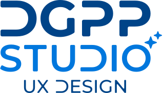
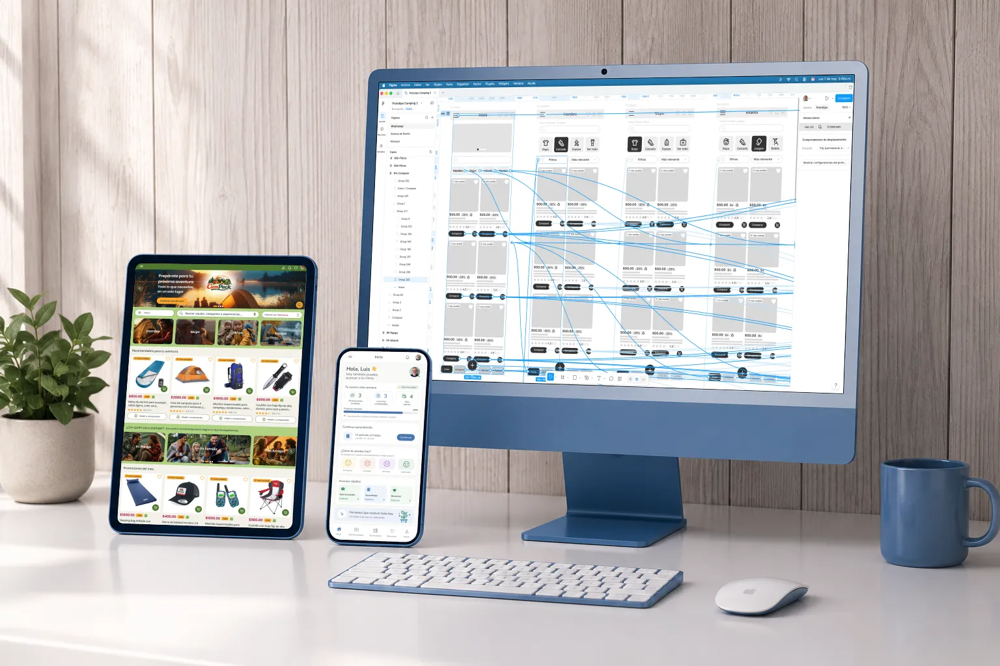

Casos de estudio
Experiencias diseñadas para resolver problemas reales
Casos UX enfocados en eCommerce, toma de decisiones y diseño centrado en el usuario.

Diseño experiencias digitales que reducen fricción, mejoran la toma de decisiones y generan valor para el negocio.
Ver casos de estudio
Casos de estudio
Casos UX enfocados en eCommerce, toma de decisiones y diseño centrado en el usuario.
Sobre mí
Soy diseñador UX/UI y desarrollador web con más de 30 años de experiencia en diseño digital, eCommerce y programas de lealtad.
Me especializo en transformar procesos complejos en experiencias claras, funcionales y centradas en el usuario.
Años de experiencia
eCommerce & Loyalty
Disponible para colaborar
Contacto
Estoy disponible para colaborar en proyectos de UX/UI, eCommerce y experiencias digitales centradas en el usuario.